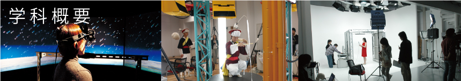
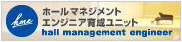

画像設計学科とは
教員紹介
キャンパスマップ

●画像設計学科とは
・新しいデザインの概念
「芸術工学」は、1968年に本学部の前身である九州芸術工科大学が創造した概念であり、その目的に「技術の基盤である科学と、 人間精神の最も自由な発現である芸術とを総合し、技術の進路を計画しその機能の設計について研究する」と謳っています。 「画像設計学科」は、創設当時にデザインの分野を、環境、工業、画像、音響、に分類してつくった４つの学科のうちのひとつで、 「Visual Communication Design」と英訳しています。九州大学と統合した後も理念は変わらず、「九州大学芸術工学部画像設計学科」 となって、人間と社会のさまざまなコミュニケーションのあり方を考え、これからの情報社会を開拓しています。
・情報社会の開拓
画像設計学科では、技術をコーディネートして高い次元でまとめることができる総合的なデザイナーの養成が必要であると考え、 人間の科学、設計、工学を専門的に学び、横断的に融合させる斬新なカリキュラムを編成しています。
・強力な大学院
創設時の考え方は時とともにさらに輝きを増し、デザインの領域は著しく発展し、生活や社会を広く支えています。九州大学と統 合して、一層総合的で強力な基盤ができ、新たな飛躍の時を迎えています。大学院も充実しており、修士、博士課程ともに定員を大 きく上回っています。留学生や社会人が多いことも特徴のひとつで、優秀な学生が内外から集まっています。世界の大学との交流も 盛んで、日本の、そして世界のデザイン界をリードしていく人材を養成しています。